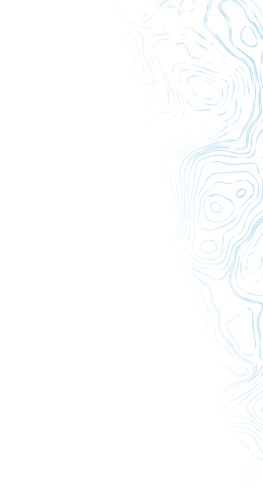
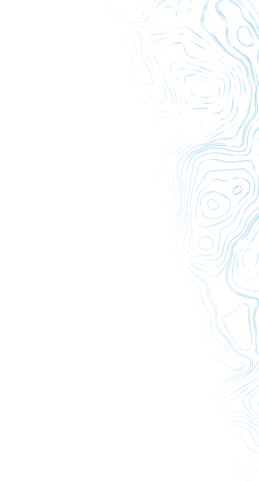
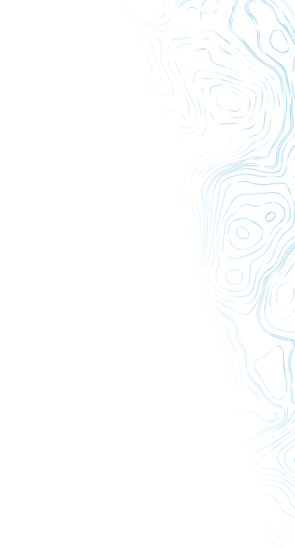

4
4
Возможно, запрашиваемая Вами страница была перенесена или удалена.
Либо Вы допустили небольшую опечатку при вводе адреса.
Вернуться на главную
Либо Вы допустили небольшую опечатку при вводе адреса.
